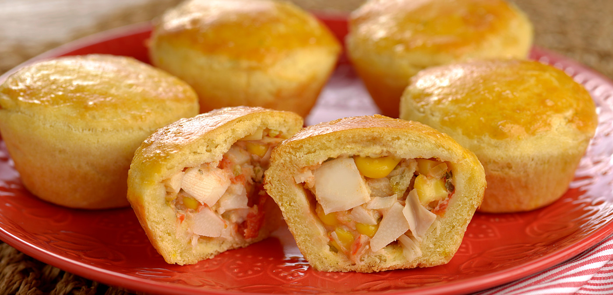

EMPADA DE PALMITO
A empada de palmito é uma iguaria deliciosa e tradicional do Espírito Santo, que combina uma massa crocante e leve com o sabor suave e cremoso do palmito. Esse lanche é perfeito para qualquer ocasião, desde um café da tarde até uma reunião de amigos. O recheio de palmito é temperado de maneira delicada, criando um equilíbrio perfeito entre a textura da massa e o sabor único do ingrediente. Simples, mas sofisticada, a empada de palmito é um verdadeiro conforto para o paladar e uma ótima maneira de saborear a culinária capixaba.

Ingredientes (48 porções)
- Recheio
- 1 colher de margarina
- 1 dente de alho amassado
- ½ vidro de palmito picadinho
- Salsa picada
- 1 copo (requeijão) de leite
- Azeitonas sem caroço picadas
- 1 pitada de noz moscada
- ½ cebola média ralada
- 2 tomates batidos no liquidificador
- 1 colher (chá) de açúcar
- Sal
- 2 colheres (sopa rasa) de maisena
- 1 ovo cozido picadinho
- Massa
- 500 g de farinha de trigo (4 xícaras)
- ½ colher (sobremesa) de sal
- 1 xícaras (café) de água fria
- 350 g de margarina gelada (12 colheres)
- 2 gemas
Modo de preparo (2 horas)
- Dourar o alho, a cebola na margarina, juntar os tomates e o palmito e refogar bem.
- Colocar o açúcar, a salsa, a sal. Desmanchar a maisena no leite e acrescentar ao refogado, mexendo sem parar.
- Quando engrossar retire do fogo, coloque o ovo, as azeitonas e a noz-moscada.
- Utilize bem frio.
- Misturar todos os ingredientes e colocar mais água, se necessário para dar liga.
- Não trabalhar muito a massa, e usar somente as pontas dos dedos, pois a palma da mão é mais quente.
- Forrar o fundo e as laterais das forminhas abrindo a massa com os dedos
- Não unte as forminhas.
- Coloque o recheio frio até as bordas, cobra com a massa sem deixar furos, bem lisinha.
- Pincele com gema e leve para gelar por 30 minutos.
- Coloque para assar em forno pré aquecido para ter o choque térmico, deixe até corar.
- Mas cuidado, pois assa rapidamente.